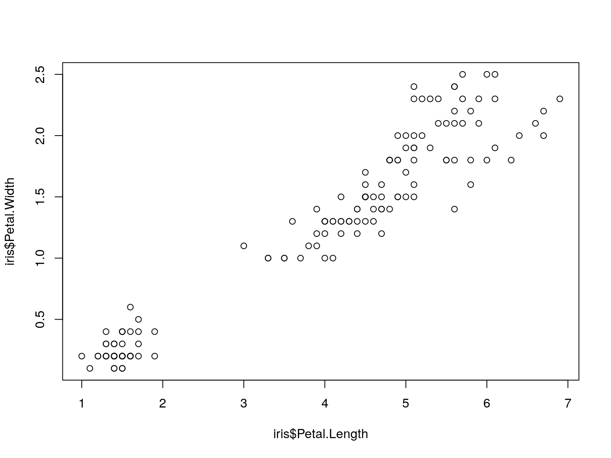
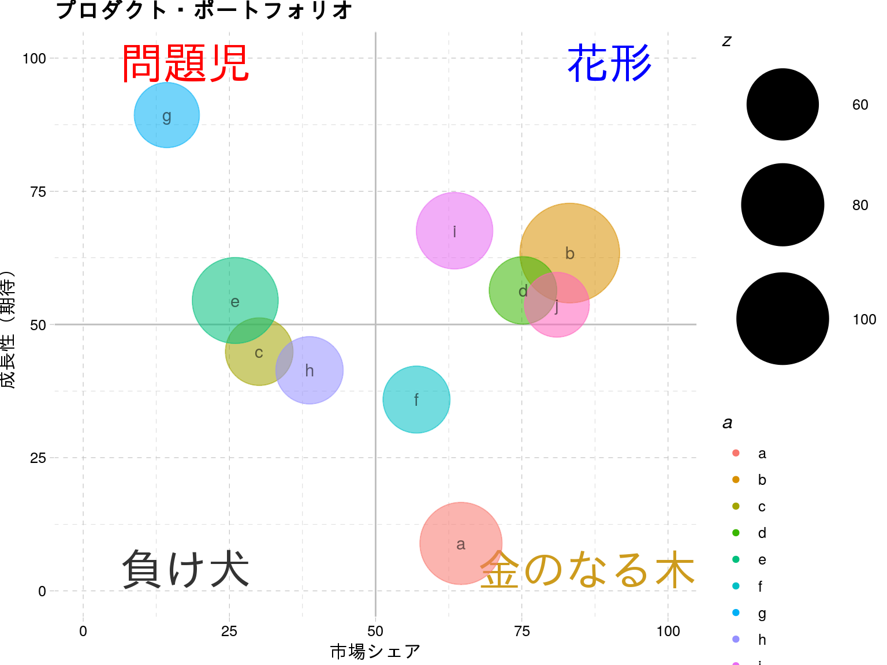
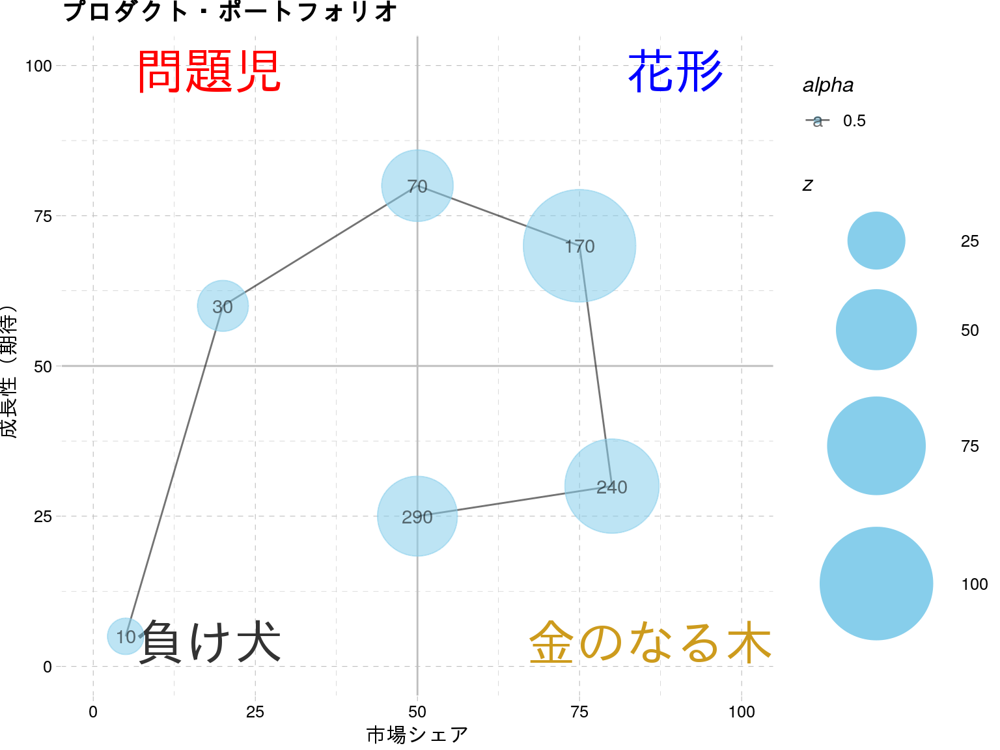
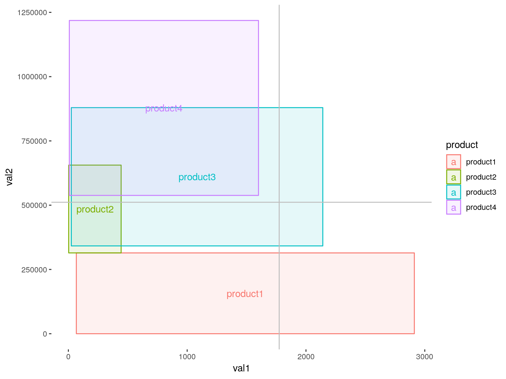
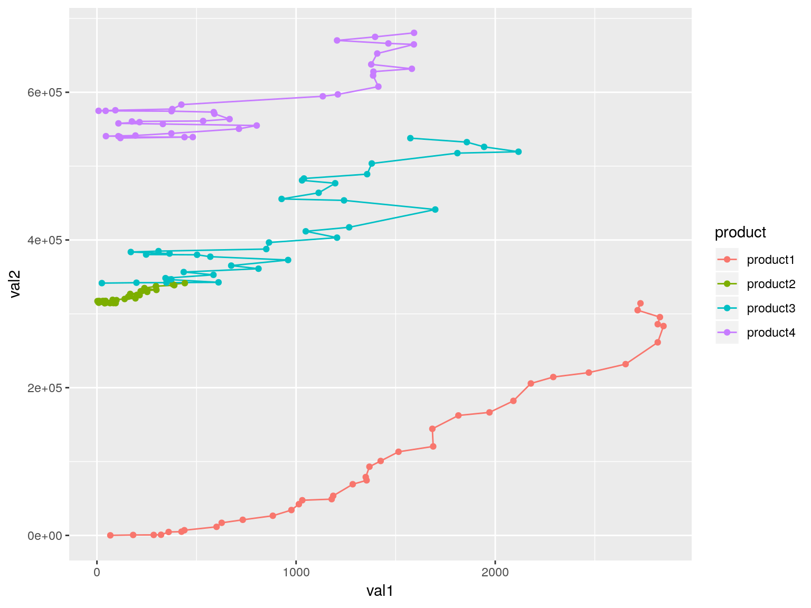
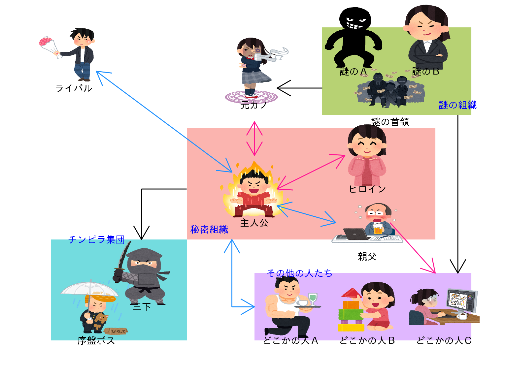

意識高い系ヴィジュアライズのすすめ
～ggplot for go-getter’s plot～
mrkhrhs
Twitter：@muraki_ng
2018.10.20
who’s this OSSAN
（だれだこのおっさんは）
自己紹介

| 名前 | mrk hrhs （@muraki_ng） |
|---|---|
| 年齢 | ３６歳 （統計上正真正銘のおっさん） |
| 所属 | F0層向け機械の製造を主力事業とする某エンタメ企業 |
| 職種 | マーケティングリサーチャー（自称） |
| 仕事 | アンケートやIoTデータで 事業部に横からふんわりと ツッコミを入れる係 |
- Rおじさんになることを夢見るおっさん
- 言うことは総じて残念です。ご承知おきください。
今日言いたいこと
これだけ
- 分析は相互行為（平たくいえばコミュニケーション）
- 相手に伝えることは可視化で
- いま、知識も実力も経験も持っていないなら、
多少のゲタくらい履いとこう - ggplotには
深い統計的知識も
強力なエンジニアリングスキルも
豊富なビジネス経験も すべて不要 - つまり無限の可能性！
意識高い系グラフでチームの
パフォーマンスをパワフルに
モチベートするのはアグリーでFIX！
…はい？
- 事業部は事業内のフレームに囚われがち（文化、とも）
- 組織がハンパに大きくなってくると、
（時として無駄にもなる…）数字が求められる - 数字に対するリテラシーは人によってアレ
- そんなことで無駄な対立を生むの、もうやめよう？
→可視化、ダイジ！
改めて、「可視化」とは何か？
→「見たいもの」にフォーカスを当てること
利用者が、
生データを読むよりも圧倒的に早く＆適切に、
現状を認識できて、次のアクションの検討が出来ること
見たいものとは何か？
（雑駁に）「事業推進」なら
「どこに投資する／しないか が決めやすい情報」
┗役職（というか見ているシゴトの範疇）
によって、どんな粒度で見たいかは変わる分析者-意思決定者の間ではしばしば、
「こまけぇこたぁいいんだよ!!」なやり取りになりがち
ならば分析者がやるべきは
細かいことは抜きにして、読み手が
「パッと分かるグラフ」
を作る！
「パッと分かる」要件
- 言いたいことがすぐ理解出来る
- ロジカルっぽい（←「っぽい」）
- 「so, what？」に答えられる
（取りうるアクションの選択肢が用意されている）
┗ビジネスにとって都合の良いこと、悪いことなど包み隠さず中立な発言
┗ヨイショやディスりだけでは終わらない
これらをキチンとやるには？
「ビジネスドメイン知識」
┗綿密なコミュニケーション（そんな時間は大体無い）
┗データリテラシー、大体の組織内の人が同じくらいタリテルラシー
そんなん大体無理＼(^^)／
相関 is 何（これを読んでいる皆様）

相関 is 何（その他の皆様）

ではどうするか？
意識高い系ビジュアライズ！
意識高い系
ビジュアライズとは？
コレが意識高い系ビジュアライズだ（言ってみた）
- 「意識高い系概念」のフレームワークに沿った可視化
- 「相手の意識＝高い」ケース
- 「あぁ、あのフレームワークね」
⇒理解度＆信頼度爆上がり（を期待したい）
- 「相手の意識＝低い」ケース
- 「なんかすごそう…」
⇒フレームワークは事象の整理・簡略化なので
いずれにしても理解されやすい！
（冷や汗）
意識高い系
ビジュアライズ見本
一例をご紹介
本日はその中でも
とりあえずできた 選りすぐりの３つをご紹介☆
その１：PPM（geom_point）
ただの散布図？いいえ、「ＰＰＭ」です！

その１：PPM（ポイント）
- ええ、ただのバブルチャートです
- 「どこに投資すべきか」を判断するのに使います
（参考：ＰＰＭ） - geom_pointとgeom_text、それにanotate等で装飾
- ggthemeを使ってさらにオサレに
enu <- 10
dat1 <- data.frame(x = abs(round(rnorm(n = enu, mean = 50, sd = 25), digits = 1)),
y = abs(round(rnorm(n = enu, mean = 50, sd = 25), digits = 1)),
z = abs(round(rnorm(n = enu, mean = 50, sd = 30), digits = 1)),
a = letters[1:enu],
b = sample(1:20, size = enu) * 1000)
dat1 %>% ggplot(aes(x, y, colour = a, alpha = 0.5))+
annotate(geom = "text", x = -Inf, y = -Inf, hjust = -0.5, vjust = -1, colour ="gray20", label = "負け犬", size = 10)+
annotate(geom = "text", x = Inf, y = -Inf, hjust = 1.0, vjust = -1, colour ="goldenrod3", label = "金のなる木", size = 10)+
annotate(geom = "text", x = -Inf, y = Inf, hjust = -0.5, vjust = 1.5, colour ="red", label = "問題児", size = 10)+
annotate(geom = "text", x = Inf, y = Inf, hjust = 1.5, vjust = 1.5, colour ="blue", label = "花形", size = 10)+ geom_vline(xintercept = 50, colour = "gray") +
geom_hline(yintercept = 50, colour = "gray")+
geom_point(aes(size = z))+
geom_text(aes(label = a),colour = "black")+
scale_size_area(max_size = 30)+
xlab("市場シェア")+ylab("成長性（期待）")+
xlim(0, 100)+ylim(0,100)+
ggtitle("プロダクト・ポートフォリオ")+
theme_pander()その１：PPM（応用）
geom_pathで経過を追う

その１：PPM（応用：ポイント）
- geom_pathを使って製品・サービスの成長～衰退過程を追うことも
- 今の位置をベースに提言
- 「もっとシェア獲得のために～」とか
- 「優良顧客を増やすために～」とか
# 渦巻きmocデータ書けなかった…
dat1_circle <- data.frame(x = c(5, 20, 50, 75, 80, 50),
y = c(5, 60, 80, 70, 30, 25),
z = c(10, 20, 40, 100, 70, 50),
a = letters[1]
) %>% mutate(cum_z = cumsum(z))
# PPMの経路を可視化
dat1_circle %>% ggplot(aes(x, y, alpha = 0.5))+
annotate(geom = "text", x = -Inf, y = -Inf, hjust = -0.5, vjust = -1, colour ="gray20", label = "負け犬", size = 10)+
annotate(geom = "text", x = Inf, y = -Inf, hjust = 1.0, vjust = -1, colour ="goldenrod3", label = "金のなる木", size = 10)+
annotate(geom = "text", x = -Inf, y = Inf, hjust = -0.5, vjust = 1.5, colour ="red", label = "問題児", size = 10)+
annotate(geom = "text", x = Inf, y = Inf, hjust = 1.5, vjust = 1.5, colour ="blue", label = "花形", size = 10)+
geom_vline(xintercept = 50, colour = "gray") +
geom_hline(yintercept = 50, colour = "gray")+
geom_path()+
geom_point(aes(size = z), colour = "skyblue")+
geom_text(aes(label = cum_z),colour = "black")+
scale_size_area(max_size = 30)+
xlab("市場シェア")+
ylab("成長性（期待）")+
xlim(0, 100)+ylim(0,100)+
ggtitle("プロダクト・ポートフォリオ")+
theme_pander()その２：ポジショニングマップ
製品群のまとまりを示します。※↓こういうの  出典は：こちら
出典は：こちら
その２：ポジショニングマップ
（雰囲気で）統計的に分析するなら
- コレポン
- 主成分
- ＭＤＳ
などなど、色々考えられますが、
これら（の名前は）使用禁止。
ggplotでやるならこう

その２：ポイント
- 多くの人が多次元なことを考えるけど、
次元を分解できないことがしばしば- 次元を分解してあげましょう
- 次元をまとめる手法は色々ありますが、
手法としての問題以前に、まず理解されない- でも手法の妥当性を聞かれるとかもうほんと（ry
- それ以前に割と「散布図」って理解されにくい
- 「範囲」で示すと（なぜか）理解されたりします
- そのために時には強引な処理もやるよ、と。
#このサンプルデータの作りがイケてないんですよね。。。
df1 <- data.frame(
hiduke = ymd("2015-01-01") %m+% months(c(0:36)),
product1 = abs(cumsum(rnorm(37, 1, 1)*sample(c(100, 50, 75, 150), 1))),
product2 = abs(cumsum(rnorm(37, 0, 1)*sample(c(100, 50, 75, 150), 1))),
product3 = abs(cumsum(rnorm(37, 0, 2)*sample(c(100, 50, 75, 150), 1))),
product4 = abs(cumsum(rnorm(37, 0.5, 1.5)*sample(c(100, 50, 75, 150), 1)))
) %>% gather(product, val1, -hiduke) %>% na.omit() %>%
mutate(val2 = cumsum(round(val1 * abs(rnorm(37,3,5)), digits = 0)))
plot_df1 <- ggplot(df1, aes(val1, val2, colour = product)) + geom_path() + geom_point()
df2 <- df1 %>% group_by(product) %>% summarise_if(is.numeric, funs(min, max))
plot_df2 <-
ggplot(df2, aes(xmin = val1_min, xmax = val1_min + val1_max,
ymin = val2_min, ymax = val2_min + val2_max,
fill = product, colour = product))+
geom_rect(alpha = .1)+
geom_text(aes(x=val1_min + val1_max/2, y=val2_min + val2_max/2, label = product))+
xlab("val1") + ylab("val2")+
geom_vline(xintercept = sum(df2$val1_min, df2$val1_max)/4, colour = "gray")+
geom_hline(yintercept = sum(df2$val2_min, df2$val2_max)/6, colour = "gray")+
theme_transparent()
plot_df2その２：元はこんなデータ
最小値と最大値をピックアップ。 
その３：そして…
その３：「相関図」
思いつかなかったので相関図作ってみました 
その３：「相関図」
意外とやること多くて面倒…
でもggimageはお手軽
# ヒト
soukan_dat_p <-
data.frame(name = c("主人公", "ヒロイン", "親父", "ライバル",
"元カノ", "三下", "序盤ボス", "謎の首領", "謎のＡ", "謎のＢ",
"どこかの人Ａ", "どこかの人Ｂ", "どこかの人Ｃ"),
p_x = c(50, 75, 75, 10, 50, 25, 15, 80, 72, 88, 58, 75, 92),
p_y = c(50, 60, 40, 90, 85, 25, 15, 80, 95, 95, 15, 15, 15),
gender = c("M", "F", "M", "M", "F", "M", "M", "M", "M", "F", "M", "F", "F"),
img = c("https://4.bp.blogspot.com/-6nucQQvGF7M/WzC-BHQmAHI/AAAAAAABM90/mCILacrOAq8IqccOnH1U_umcAD56flJnQCLcBGAs/s400/yaruki_moeru_man.png",
"https://3.bp.blogspot.com/-2GQCRtLUGJg/W2l4HEL5XyI/AAAAAAABN5E/MFUvBMVtTzQVIohDVbtyNohSNZSsBamJgCLcBGAs/s400/moesode_woman.png",
"https://4.bp.blogspot.com/-DVrm-ZoqJsQ/V_4b9xmCr7I/AAAAAAAA-wg/glvaVXIbsiwTZxKrk9vC1dXHArD1k7edgCLcB/s400/yopparai_kaisya_office.png",
"https://2.bp.blogspot.com/-865FYLWXajk/Wytgvg53qlI/AAAAAAABM1w/HycCfGtSd-wgRj20OOcCP5L5IIcDRK-TACLcBGAs/s450/tsundere_boy.png",
"https://4.bp.blogspot.com/-hko-old-diQ/WdMyjmpC3SI/AAAAAAABHRw/JKqfmklVJDoXQCpdh_ZG-KvZJAfYN0KPwCLcBGAs/s470/kids_chuunibyou_girl.png",
"https://4.bp.blogspot.com/-BtG1hmLlBao/VGLMdrI9ygI/AAAAAAAApA4/hccjxUgD_Uw/s400/ninja_bad.png",
"https://1.bp.blogspot.com/-04NRuZbkNzw/Wufm_bksivI/AAAAAAABLwI/faEtIkyq8y8_4Wgtb7aXJ09tspbSuq19QCLcBGAs/s400/suteneko_hirou_furyou.png",
"https://4.bp.blogspot.com/-VA_IOO7AQy4/VeJ-lBs7uwI/AAAAAAAAxH8/36QFYd58nRk/s450/money_yami_soshiki.png",
"https://4.bp.blogspot.com/--WcbDAiKCLM/U-8FxLYXUxI/AAAAAAAAkx8/uF2u7PFSiUA/s400/warumono.png",
"https://2.bp.blogspot.com/-wq-_o24WBZo/WBsAJCx364I/AAAAAAAA_Sk/pHHObu1yi9keYT6rXDDdpvE5TFwK9KeCgCLcB/s400/businesswoman8_niyari.png",
"https://3.bp.blogspot.com/-tSd5PA6e7N4/W6DTGgww_FI/AAAAAAABO5Y/0HjYsilb3-k41PcWbW06Pat73twhNiq1wCLcBGAs/s400/cafe_macho_tenin.png",
"https://1.bp.blogspot.com/-UxW-KveXEFE/WqiiaLYH4QI/AAAAAAABK6o/lMCp-EamIc0UseuPcpkaO4MS7TJaMdvEwCLcBGAs/s400/toy_tsumiki_girl.png",
"https://4.bp.blogspot.com/-ky9zKCOMv7o/WlGpaJt9eVI/AAAAAAABJm4/3qjfM3w2S8ssEJjMbqzqlwaantLxfn_zgCLcBGAs/s450/job_illustrator_pc_woman_tetsuya.png") #いらすとやさんいつもお世話になってます
)
# シマ
soukan_dat_g <-
data.frame(g_xmin = c(35, 5, 50, 65),
g_xmax = c(90, 35, 98, 98),
g_ymin = c(35, 5, 5, 72),
g_ymax = c(68, 35, 25, 98),
name = c("", "序盤の悪役", "謎の組織", "どこかの人たち"))
# 図示にはggimageを使ってます。これラクだなぁ。
ggplot()+
geom_rect(data = soukan_dat_g, aes(xmin = g_xmin, xmax = g_xmax,
ymin = g_ymin, ymax = g_ymax,
fill = name, alpha = 0.8)) +
geom_image(data = soukan_dat_p, aes(p_x, p_y, image = img),
size = .15, na.rm = FALSE)+
geom_text(data = soukan_dat_p, aes(p_x, p_y-10, label = name))+
xlim(0, 100) + ylim(0, 100) + #でもここからannotateの嵐…
annotate("segment",x = 55, xend = 70, y= 50, yend = 60,
colour="deeppink", size = 0.5, arrow = arrow(ends = "both"))+
annotate("segment",x = 50, xend = 50, y= 60, yend = 70,
colour="deeppink", size = 0.5, arrow = arrow(ends = "both"))+
annotate("segment",x = 80, xend = 90, y= 40, yend = 25,
colour="deeppink", size = 0.5, arrow = arrow())+
annotate("segment",x = 55, xend = 68, y= 45, yend = 40,
colour="dodgerblue1", size = 0.5, arrow = arrow(ends = "both"))+
annotate("segment",x = 45, xend = 15, y= 55, yend = 85,
colour="dodgerblue1", size = 0.5, arrow = arrow(ends = "both"))+
annotate("segment",x = 65, xend = 55, y= 80, yend = 80,
colour="black", size = 0.5, arrow = arrow())+
annotate("segment",x = 95, xend = 95, y= 72, yend = 25,
colour="black", size = 0.5, arrow = arrow())+
annotate("segment",x = 35, xend = 25, y= 50, yend = 50,
colour="black", size = 0.5)+
annotate("segment",x = 25, xend = 25, y= 50, yend = 35,
colour="black", size = 0.5, arrow = arrow())+
annotate("segment",x = 45, xend = 45, y= 15, yend = 35,
colour="dodgerblue1", size = 0.5, arrow = arrow())+
annotate("segment",x = 45, xend = 50, y= 15, yend = 15,
colour="dodgerblue1", size = 0.5, arrow = arrow())+
annotate("text", x = 40, y = 38, label = "秘密組織", colour = "blue")+
annotate("text", x = 15, y = 35, label = "チンピラ集団", colour = "blue")+
annotate("text", x = 60, y = 25, label = "その他の人たち", colour = "blue")+
annotate("text", x = 95, y = 75, label = "謎の組織", colour = "blue")+
theme_map() + theme(legend.position = 'none')技術・知識と
政治の程よいバランスを
~smart aleckからgo-getterへ~
イシューは人それぞれ違う
技術的、知識的正しさも、
そのイシュー（課題認識）を持たない人には伝わらない
大切なのは、意思決定者（偉い人）が
「うん」と言える状態に持っていくこと
そのプロセスで
データ分析だろうと勘だろうと情に訴えようと、
何を使ったってよい！
┗やりすぎて元の目的を忘れないよう注意
イシューを揃えるプロセスのお供に
分析は現場との信頼関係と適切な距離感が重要。
「意識高い系」を演出してみるのはどうでしょう？
┗難しい言葉で知ったかぶり（smart aleck）になるより、
やり手キャラ（go-getter）を演じよう。
傍らにはggplotを
ggplot はとても自由で、応用が非常にやりやすい
「見せ方」「言い方」を整えて、「やり手」になろう！